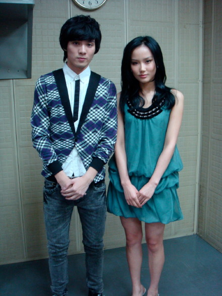

陶子姐封我为转音女王？小胖老师说终于见到我来了，康祯庭特地过来看我，型show家族的成员坐在观众席，环球天韵的同胞在上海等我的好消息，环球台北的总经理在等我的好消息。。。。。。
谢谢大家对我的信心和关注，又一次应征了说的容易做的难这句话，我紧张了。。。
在台北了，终于来到了期待已久的星光舞台，本次的服装是由星光节目组的造型老师为我准备，还不错吧
很喜欢黄伟晋，一直有关注他的表演，乖乖的可爱和唱歌时的认识非常吸引人，真的希望他可以战到最后：）

谢谢康祯庭在星光的比赛中演唱了我的歌，这次她特地过来看我，虽然第一次见面，但是见到她种熟悉的感觉，
我们聊天很开心，我唱歌的时候她一直都站在台口为我加油，很感动，谢谢康康，希望发展的越来越好：）